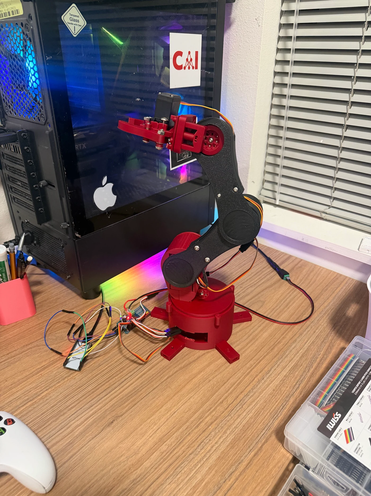
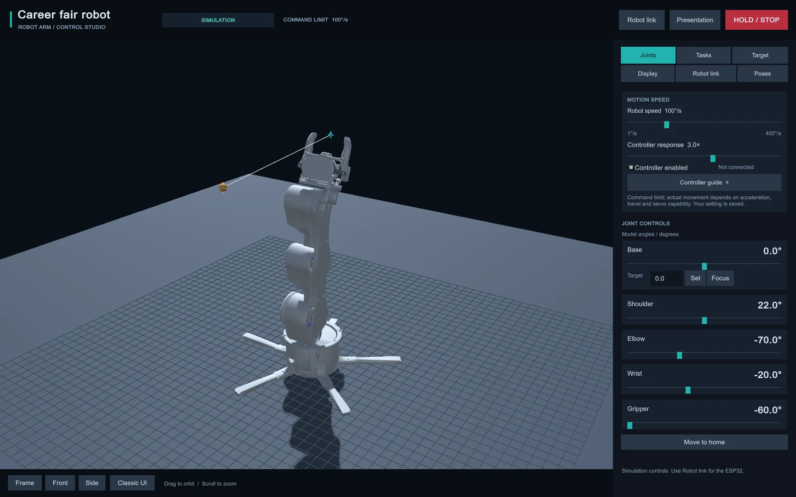
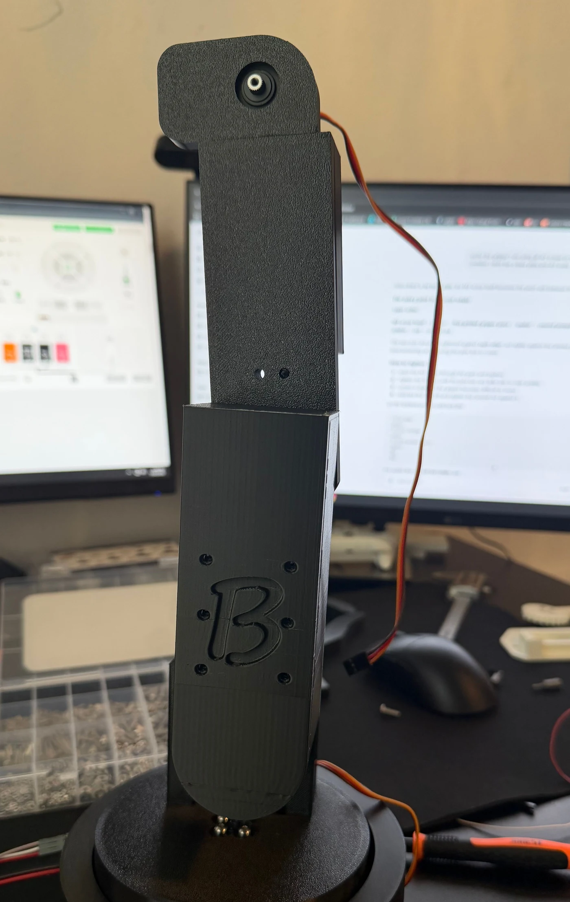
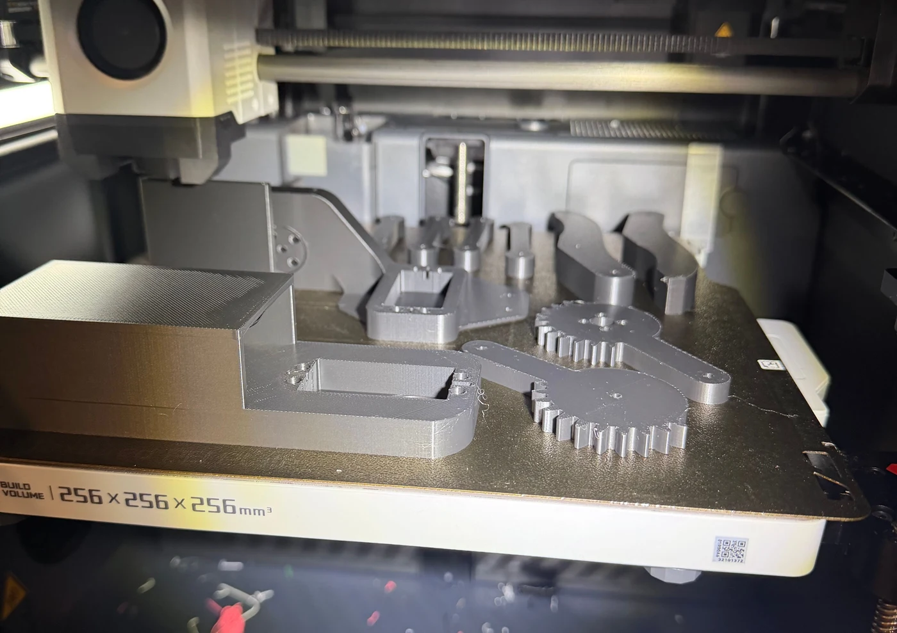
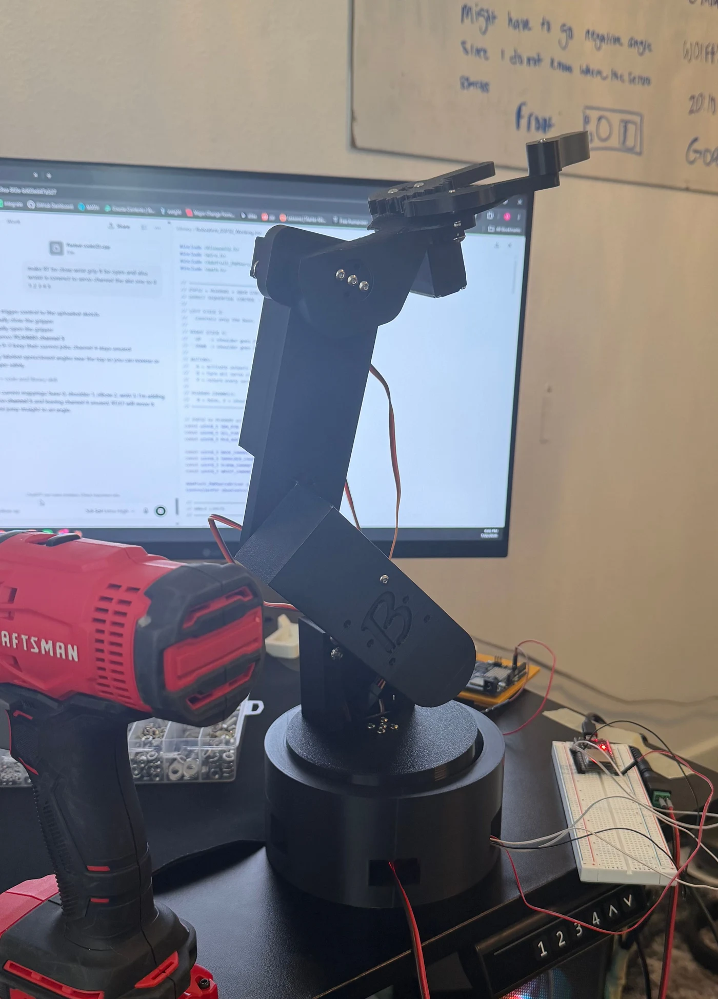
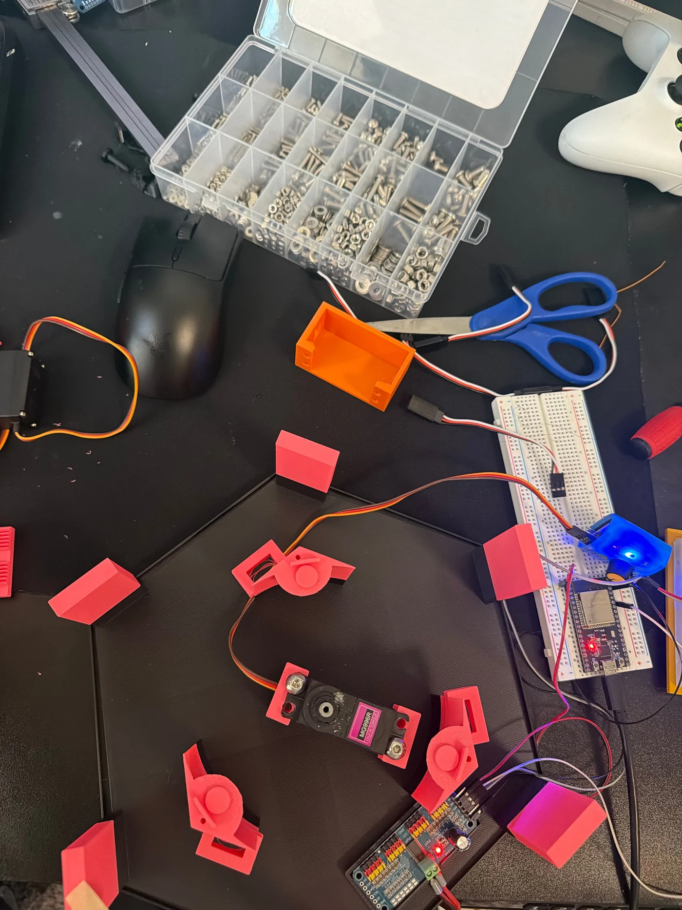
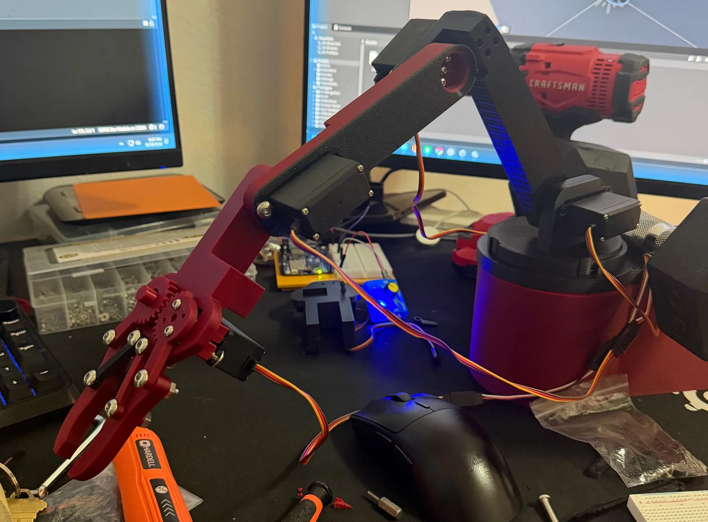
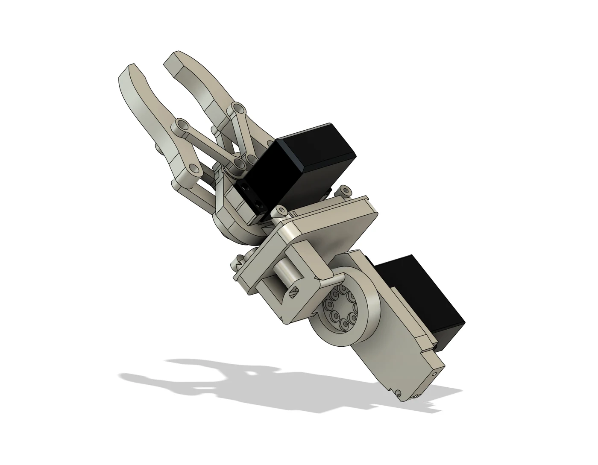
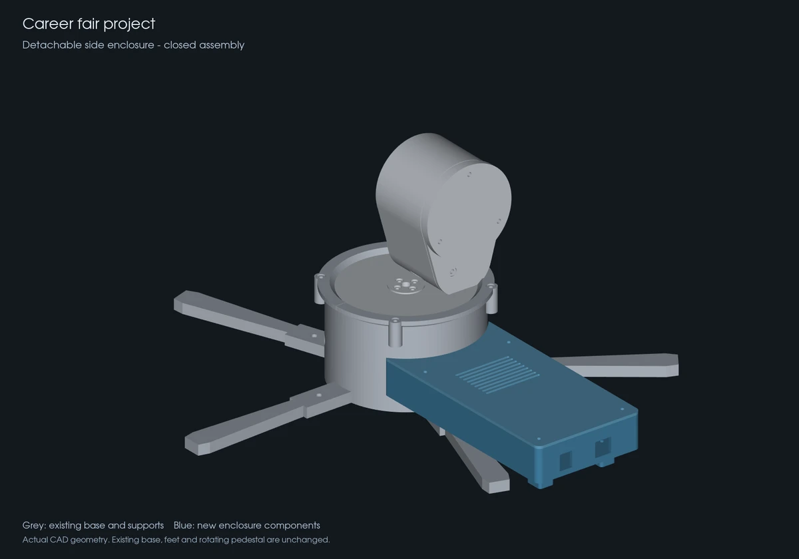
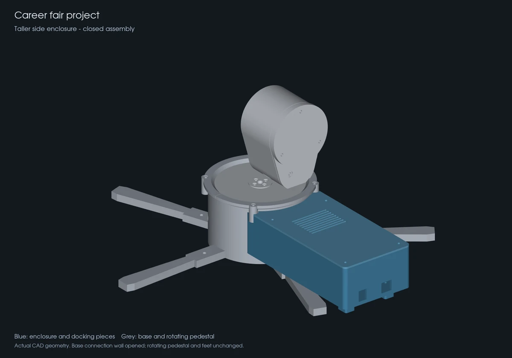

4-DOF
Robotic Arm.
Built. Tested. Redesigned.
I built this robotic arm with four positioning joints and a servo gripper. The current design combines a slimmer printed structure, a wider base, embedded electronics, and a Unity control interface—developed through testing and redesign.
My work: Fusion 360 design, 3D printing, assembly, electronics integration, testing, and the Unity control interface.


Put it in motion.
Rotate the CAD model and try the joints.
The CAD assembly used in my Unity simulation. Later enclosure and mounting-hole revisions are not shown.
From a command to motion.
The Unity interface sends joint commands over USB to the ESP32. The PCA9685 provides the control signals for five servo channels. I can use the Xbox controller for direct control or record a sequence of commanded movements for playback.
- Unity + XboxInterface, joint targets & recordings
- USB → ESP32Command link
- PCA9685Servo control signals
- Physical armBase, shoulder, elbow, wrist & gripper
What the first assemblies taught me.

Weight and the base belong in the same design decision.
The original base was too small for the mass and reach of the arm. During testing, I noticed wobbling rather than the stable foundation I wanted.
Making the individual parts function was only part of the problem. The whole structure also needed a sensible balance between arm geometry, weight, and support.
My response
I reduced unnecessary bulk in the arm and increased the base footprint. I treated the redesign as a change to the whole assembly, rather than trying to solve the wobble with one small adjustment.
CAD was the starting point.

I worked in Fusion 360, printed the components, assembled the arm, and integrated the electronics. Building the physical version let me see what the model alone could not show: how the weight, joints, and printed fits behaved together.
A fit in CAD still needs a physical test.
The parts generally fit, but some connections had more play than I wanted. As I learned more about FDM printing, I revised geometry and clearances to improve the fit. That experience taught me to design for the printed part, not just the ideal dimensions on screen.
The main challenge was mechanical.
The early arm was too heavy for its base. Bulky components and loose printed fits made the assembly wobble.
- SITUATION
The base was small relative to the arm’s weight and geometry, and several printed connections had unwanted play.
- TASK
Build a lighter structure with a more stable foundation, while learning how to get better fits from printed components.
- ACTION
I redesigned almost the whole arm: slimmer components, a larger base, revised gripper geometry, and more room for the electronics.
- RESULT
The newer build is less bulky and more stable in use. I learned to treat weight distribution, support, and printed fit as connected design decisions.
Less bulk. A wider foundation.
- Early designHeavy links, compact base
- TestingWobble and loose fits
- RedesignSlimmer arm, larger base
- Newer buildLess bulk, improved stability

Workshop photographs of the early assembly and current build, showing the design progression from different camera angles.

Reworking the parts, then rebuilding the system.
I made the arm components thinner to reduce the weight being supported, and enlarged the base to give that load a wider foundation. Printing and assembling the changes let me check the design as a working system.
The lesson was to consider the whole robot early: mass, support, joint fit, and space for the electronics all affect one another.
Reconsidering the geometry.


The focus of this iteration was the geometry: making the mechanism and its mounting arrangement work better as part of the whole arm.
More room inside.
I enlarged the enclosure because I needed more internal space for electronics and additional components. The goal was better organization and cleaner integration.


CAD design comparison: the extra height creates more space for components and their connections.
Earlier prototypes.
Failed prototypes
Rotate the earlier designs to see where the project started.
Motor arm
Original Fusion 360 designThe wire routing left too much exposed. I wanted cleaner packaging.
Official V2 Robotic Arm
Earlier arm iterationI aimed for a grid-style design, but it didn’t work out. The gripper wasn’t fully functional.
MG996R Servo Holder
Original model · gripper parts shown separatedThe assembly was too heavy for the base.